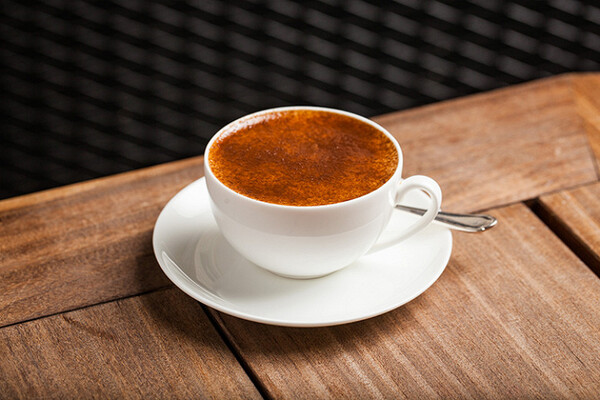
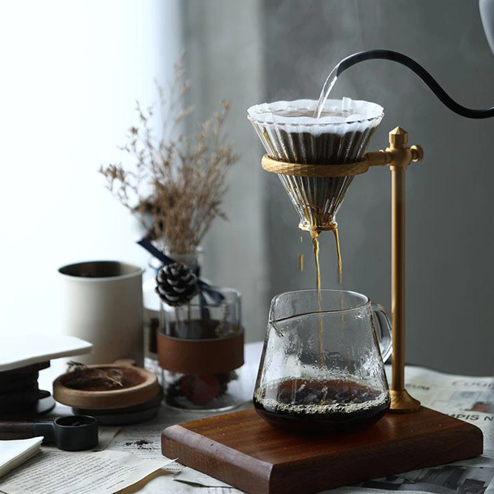
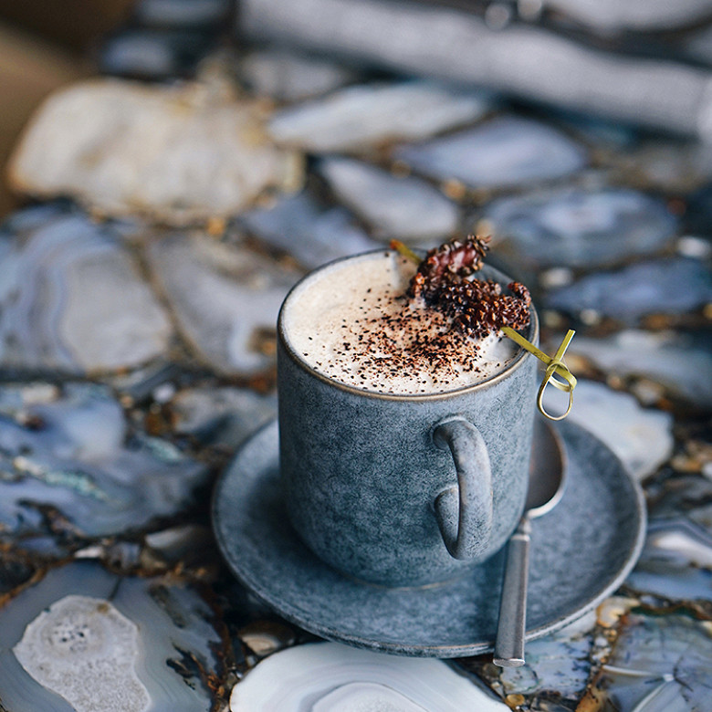
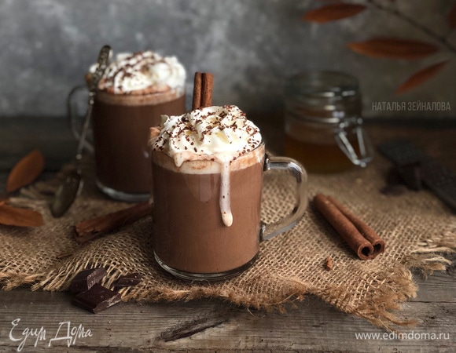
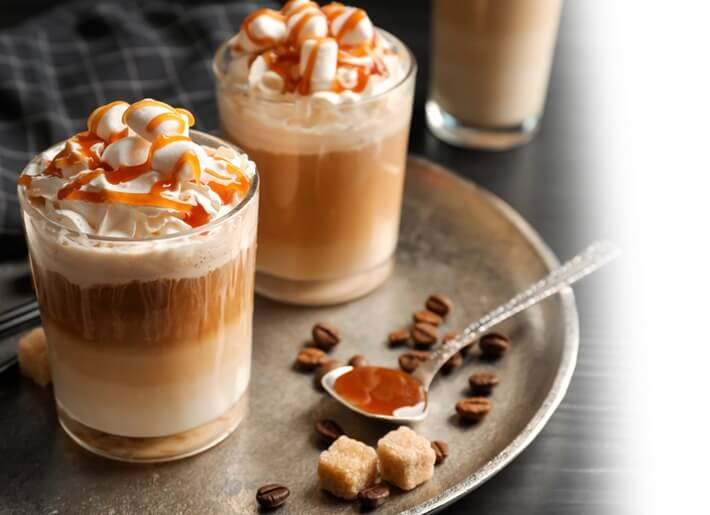

В прохладный зимний день хочется согреться каким-нибудь сладким напитком. Вкусный кофе, сделанный по оригинальному рецепту, — отличная замена пуховому одеялу.
В наших кофейнях мы предлагаем лучшие (по мнению наших бариста и посетителей рецепты по-настоящему атмосферных напитков. Снимите усталость и насладитесь вкусом.
Brown Sugar
Новые фильтры
Сосновый капучино
Горячий шоколад
Орехово-ирисный латте
Внешний вид | Напиток | Стоимость | Дополнительная информация: |
|  | Brown Sugar |
249 руб. |
Эспрессо со сливками, кленовым сиропом и японским тростниковым сахаром. |
|  | Фильтры |
199 руб. |
Яблочный и солодовый авторские фильтры от наших бариста. |
|  | Сосновый капучино |
279 руб. |
Эспрессо, соевое молоко, сироп из шишек и холодная вишневая пена. |
|  | Горячий шоколад |
239 руб. |
Уточняйте дополнения в кофейной карте у бариста, мы можем внести изменения в рецепт по Вашей просьбе. |
|  | Орехово-ирисный латте |
249 руб. |
Вариации на миндальном, фундучном и овсяном молоке. |
| Подробнее об альтернативном молоке можете узнать здесь | |||